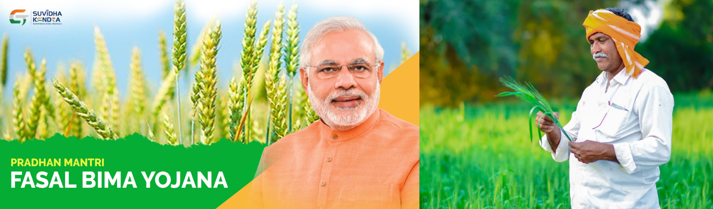
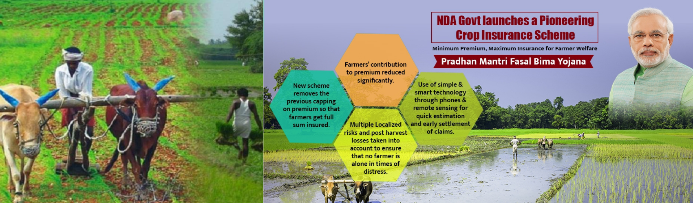

1 / 3

2 / 3

3 / 3

Farmer Insurance
Crop insurance is purchased by agricultural producers, and subsidized by the federal government, to protect against either the loss of their crops due to natural disasters, such as hail, drought, and floods, or the loss of revenue due to declines in the prices of agricultural commodities. The two general categories of crop insurance are called crop-yield insurance and crop-revenue insurance. On average, the federal government subsidizes 62 percent of the premium. In 2019, crop insurance policies covered almost 380 million acres. Major crops are insurable in most counties where they are grown, and approximately 90% of U.S. crop acreage is insured under the federal crop insurance program. Four crops—corn, cotton, soybeans, and wheat— typically account for more than 70% of total enrolled acres. For these major crops, a large share of plantings is covered by crop insurance.
Objective of Pradhan Mantri Fasal Bima Yojana
To provide insurance coverage and financial support to the farmers in the event of failure of any of the notified crop as a result of natural calamities, pests & diseases. To stabilise the income of farmers to ensure their continuance in farming. To encourage farmers to adopt innovative and modern agricultural practices. To ensure flow of credit to the agriculture sector.